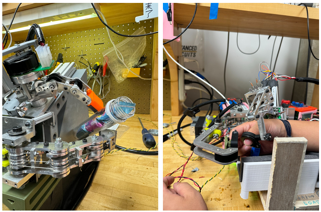

View
I am a Master's student at Northwestern University studying mechanical engineering . In June 2024 I graduated from Northwestern with a Bachelor’s in mechanical engineering with a concentration in robotics and a minor in computer science. I also spent a semester abroad at ETH Zurich in Switzerland, where I took Master’s level classes in Robotics focusing on autonomous vehicles.
I’ve had a broad range of internship experience. In 2022 I worked at Maglev Aero, a small startup in Boston developing new eVTOL propulsion technologies. In 2023 I worked as a manufacturing engineering co-op in Honda’s Marysville Auto Plant. Currently I’m an intern at Oshkosh Corporation in the Autonomy and Active Safety department. I'm looking for full time positions after graduating with my Master’s in March 2025 where I can gain more experience designing, building, and programming robots.
If you would like to view the code, other photos, or have questions about my projects, please contact me.